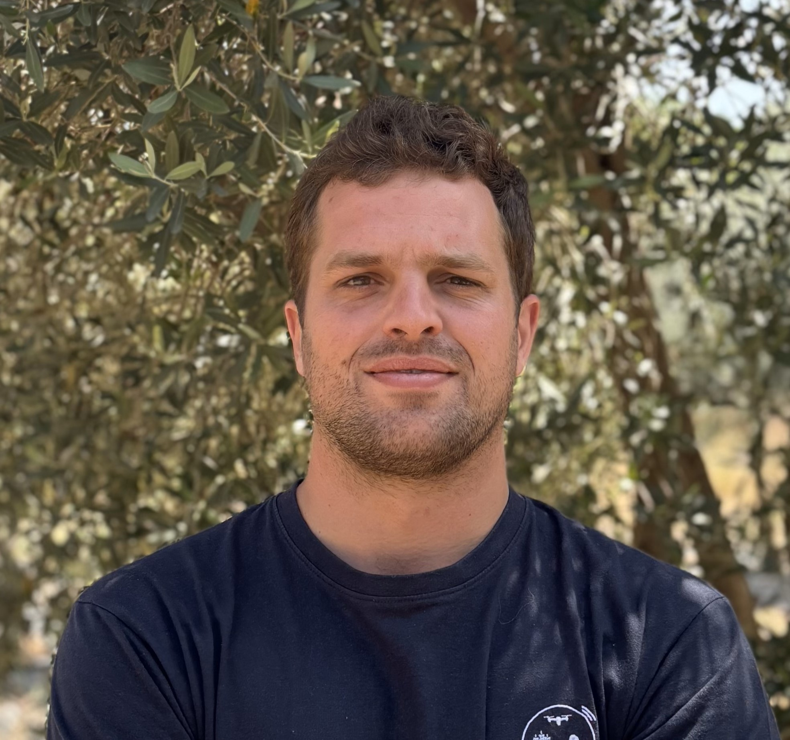

¿Qué hacemos?
En Lindagro facilitamos la compraventa de fincas rústicas mediante un proceso técnico, transparente y profesional. Trabajamos directamente con propietarios que desean vender su finca, desarrollando un estudio completo de viabilidad agronómica y económica (due diligence) que aporta al comprador toda la información necesaria para tomar decisiones de inversión seguras y fundamentadas.
Nuestro enfoque
- Análisis agronómico riguroso: Estudiamos el potencial productivo, el uso del suelo, la disponibilidad hídrica y la eficiencia de manejo de cada finca, gracias al trabajo de nuestro equipo de ingenieros agrónomos.
- Estudio económico e inversor: Evaluamos los escenarios de rentabilidad, costes operativos y oportunidades de transformación de uso agrícola o patrimonial, de la mano de expertos en planificación financiera.
- Asesoramiento administrativo: Guiamos a ambas partes del proceso (vendedor y comprador) con claridad jurídica y documental, asegurando un proceso ágil y sin incertidumbres.

Ana Martínez
Ingeniera Agrónoma
Javier López
Analista Financiero
Laura Sánchez
Gestora de Activos Rurales